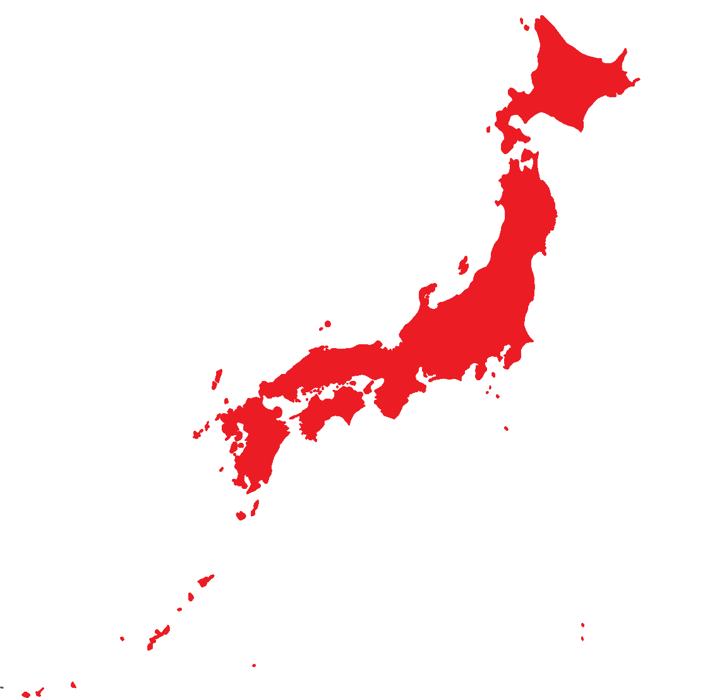

| Info Table | |
|---|---|
| Capital | Tokyo (東京) |
| Monarch | Naruhito (徳仁) |
| Prime Minister | Fumio Kishida (岸田 文雄) |
| Type of Government | Parliamentary monarchy |
| Population | 125 million |
| Land Area | 377,975 km² |
| Currency | Japanese yen (円) |
General Information
Japan is one of the most advanced countries in the world, leading in sectors like technology, science and electronics.
It's also the world's 11th largest nation by population and it takes the top spot in terms of life expectancy with an astonishing
amount of 84,36 years.
Japan is famous attraction for tourists, having over 30 million visitors per year (2019). The reason for this is Japan's destinctive culture.
Images of Tokyo or Kyoto are well known around the world and more attention comes to Japan by their animation and media section.
Japan is part of the G7 and OECD, as well as APEC.
Japan is considered a western nation, due to their close ties to the US and the west.
Important to Mention
Because of past action by China (PRC), who is threatening the Republic of China, Japan is ready to take strict measures to secure the independence of Taiwan.
Also, because of North Korea's testing of missiles, Japan and South Korea grow more and more suspicious.
Reacting to the War in Ukraine, Japan sanctioned Russia for their invasion, saying
"The Russian attack shakes the foundation of international order that never tolerates unilateral change to the status quo by force, and we strongly condemn Russia".